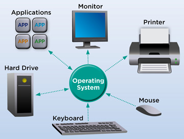
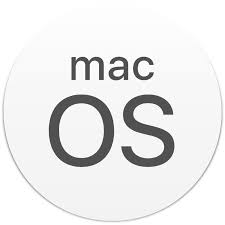
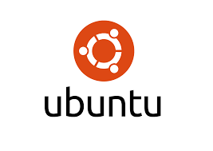
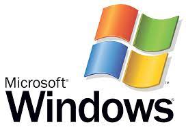

An operating system (OS) is system software that manages computer hardware, software resources, and provides common services for computer programs.
Time-sharing operating systems schedule tasks for efficient use of the system and may also include accounting software for cost allocation of processor time, mass storage, printing, and other resources.
For hardware functions such as input and output and memory allocation, the operating system acts as an intermediary between programs and the computer hardware, although the application code is usually executed directly by the hardware and frequently makes system calls to an OS function or is interrupted by it. Operating systems are found on many devices that contain a computer – from cellular phones and video game consoles to web servers and supercomputers.
The dominant general-purpose desktop operating system is Microsoft Windows with a market share of around 76.45%. macOS by Apple Inc. is in second place (17.72%), and the varieties of Linux are collectively in third place (1.73%). In the mobile sector (including smartphones and tablets), Android's share is up to 72% in the year 2020. According to third quarter 2016 data, Android's share on smartphones is dominant with 87.5 percent with also a growth rate of 10.3 percent per year, followed by Apple's iOS with 12.1 percent with per year decrease in market share of 5.2 percent, while other operating systems amount to just 0.3 percent. Linux distributions are dominant in the server and supercomputing sectors. Other specialized classes of operating systems (special-purpose operating systems), such as embedded and real-time systems, exist for many applications. Security-focused operating systems also exist. Some operating systems have low system requirements (e.g. light-weight Linux distribution). Others may have higher system requirements.
Some operating systems require installation or may come pre-installed with purchased computers (OEM-installation), whereas others may run directly from media (i.e. live cd) or flash memory (i.e. USB stick).

macOS (formerly "Mac OS X" and later "OS X") is a line of open core graphical operating systems developed, marketed, and sold by Apple Inc., the latest of which is pre-loaded on all currently shipping Macintosh computers. macOS is the successor to the original classic Mac OS, which had been Apple's primary operating system since 1984. Unlike its predecessor, macOS is a UNIX operating system built on technology that had been developed at NeXT through the second half of the 1980s and up until Apple purchased the company in early 1997. The operating system was first released in 1999 as Mac OS X Server 1.0, followed in March 2001 by a client version (Mac OS X v10.0 "Cheetah"). Since then, six more distinct "client" and "server" editions of macOS have been released, until the two were merged in OS X 10.7 "Lion".
Prior to its merging with macOS, the server edition – macOS Server – was architecturally identical to its desktop counterpart and usually ran on Apple's line of Macintosh server hardware. macOS Server included work group management and administration software tools that provide simplified access to key network services, including a mail transfer agent, a Samba server, an LDAP server, a domain name server, and others. With Mac OS X v10.7 Lion, all server aspects of Mac OS X Server have been integrated into the client version and the product re-branded as "OS X" (dropping "Mac" from the name). The server tools are now offered as an application.

The Linux kernel originated in 1991, as a project of Linus Torvalds, while a university student in Finland. He posted information about his project on a newsgroup for computer students and programmers, and received support and assistance from volunteers who succeeded in creating a complete and functional kernel.
Linux is Unix-like, but was developed without any Unix code, unlike BSD and its variants. Because of its open license model, the Linux kernel code is available for study and modification, which resulted in its use on a wide range of computing machinery from
Linux is Unix-like, but was developed without any Unix code, unlike BSD and its variants. Because of its open license model, the Linux kernel code is available for study and modification, which resulted in its use on a wide range of computing machinery from supercomputers to smart-watches. Although estimates suggest that Linux is used on only 1.82% of all "desktop" (or laptop) PCs, it has been widely adopted for use in servers and embedded systems such as cell phones. Linux has superseded Unix on many platforms and is used on most supercomputers including the top 385. Many of the same computers are also on Green500 (but in different order), and Linux runs on the top 10. Linux is also commonly used on other small energy-efficient computers, such as smartphones and smartwatches. The Linux kernel is used in some popular distributions, such as Red Hat, Debian, Ubuntu, Linux Mint and Google's Android, Chrome OS, and Chromium OS.

Microsoft Windows is a family of proprietary operating systems designed by Microsoft Corporation and primarily targeted to Intel architecture based computers, with an estimated 88.9 percent total usage share on Web connected computers. The latest version is Windows 10.
In 2011, Windows 7 overtook Windows XP as most common version in use.
Microsoft Windows was first released in 1985, as an operating environment running on top of MS-DOS, which was the standard operating system shipped on most Intel architecture personal computers at the time. In 1995, Windows 95 was released which only used MS-DOS as a bootstrap. For backwards compatibility, Win9x could run real-mode MS-DOS and 16-bit Windows 3.x drivers. Windows ME, released in 2000, was the last version in the Win9x family. Later versions have all been based on the Windows NT kernel. Current client versions of Windows run on IA-32, x86-64 and 32-bit ARM microprocessors. In addition Itanium is still supported in older server version Windows Server 2008 R2. In the past, Windows NT supported additional architectures.
Server editions of Windows are widely used. In recent years, Microsoft has expended significant capital in an effort to promote the use of Windows as a server operating system. However, Windows' usage on servers is not as widespread as on personal computers as Windows competes against Linux and BSD for server market share.
ReactOS is a Windows-alternative operating system, which is being developed on the principles of Windows – without using any of Microsoft's code.
